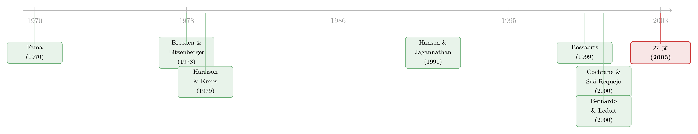

把『检验』指向未来：一个绕开联合假设的无套利约束
本文读的是 Bondarenko (2003, Review of Financial Studies)：作者把「纯套利」放宽成「统计套利 (statistical arbitrage)」，证明只要定价核 (pricing kernel) 只依赖最终状态、与价格路径无关，市场上就不可能存在统计套利机会；而这件事等价于一条全新的、与偏好无关、与模型无关的鞅约束——把证券价格用「最终价格处的风险中性密度」去贴现，得到的过程必须是鞅。它最妙的地方在于：检验时要回头去看未来，于是困扰了效率市场假说半个世纪的「联合假设难题」被一刀切开。
1 一个老问题：我们到底在检验什么
先从一个谁都绕不过去的尴尬讲起。
效率市场假说 (efficient market hypothesis, EMH) 的检验，几乎总是这样一个流程：你先写下一个均衡模型，模型给你一个定价核 \(m_T\)，然后你去看资产价格是否满足
$$E[m_s Z_s \mid I_t] = m_t Z_t, \qquad t < s \le T, \tag{1}$$
其中 \(Z_t\) 是某个（可能路径依赖的）支付 \(Z_T = Z(I_T)\) 在 \(t\) 时刻的价值，\(m_t = E[m_T \mid I_t]\)，无风险利率设为零。检验通过，皆大欢喜；检验被拒，麻烦就来了——你永远说不清，到底是市场真的无效，还是你那个 \(m_T\) 选错了。
这就是 Fama (1970) 当年就点破、之后被无数次重提的「联合假设难题 (joint hypothesis problem)」：任何对市场效率的检验，本质上都是「市场有效」与「我假设的那个定价模型正确」两件事捆在一起的检验。拒绝了，你不知道该怪谁。
按理说，这是个死结。\(m_T\) 是不可观测的，它可以是 CAPM 的边际效用，可以是消费 CAPM 的跨期替代率，也可以是某个你还没想到的多因子组合。只要 \(m_T\) 可以随便选，几乎任何价格动态都能被某个模型「解释」掉。换句话说，约束太弱，弱到没有实证含金量。
那么，有没有可能找到一条约束，它根本不需要你预先承诺任何一个 \(m_T\)？
2 顺着「纯套利」往下想，却走不远
一个自然的起点是无套利。
纯套利机会 (pure arbitrage opportunity, PAO) 是一个零成本策略，它「有可能赚，绝不可能亏」：\(E[Z_T \mid I_0] > 0\)，且 \(Z_T \ge 0\) 对所有路径 \(I_T\) 成立。Harrison and Kreps (1979) 的第一基本定理告诉我们，不存在 PAO 当且仅当存在一个严格为正的定价核 \(m(I_T) > 0\) 支撑价格。
这条定理的好处是它不需要指定具体模型——只要正就行。可坏处也正在这里：它给的约束太松。除了「为正」，\(m(I_T)\) 什么形状都可以。作者说得很直白：两个「很接近」的价格路径，对应的定价核值允许相差任意远。这样的定价核，几乎不可能是任何人的边际效用函数。于是在不完全市场里给期权定价，无套利上下界往往宽得没法用。
所以接着，一个自然的问题是：能不能在「无套利」之外，再加一点点结构，把约束收紧？
这正是 2000 年前后一批工作的思路。Cochrane and Saá-Requejo (2000) 提出不仅排除 PAO，还排除「好交易 (good deals)」——夏普比率高得离谱的机会；沿着 Hansen and Jagannathan (1991) 的方差下界，他们对定价核的波动率设了上限。Bernardo and Ledoit (2000) 则排除「近似套利 (approximate arbitrage)」，对收益-损失比 (gain-loss ratio) 设上限。这些做法都有效，但它们都有一个共同的「人为」味道：你得替「夏普比率高到多少算太高」「收益损失比多大算太大」划一条线，还往往得指定一个基准定价核。门槛定在哪里，结论就变到哪里。
本文的反转，就发生在这里。
3 真正关键的一步：让定价核「忘记路径」
作者没有去管夏普比率、也没有去设收益损失比的门槛。他只问了一个看似无害的问题：定价核 \(m_T\)，凭什么要依赖整条价格路径 \(I_T\)？
想想最简单的禀赋经济：一个代表性投资者，效用函数是 \(U(v_T)\)，只看期末的市场组合价格 \(v_T\)。那么定价核就是 \(m_T = U'(v_T)\)——它只依赖最终状态，不依赖价格是怎么一步步走到 \(v_T\) 的。一般地，作者把这写成核心假设：
假设 1（路径无关）：定价核只依赖最终状态，\(m_T = m(\xi_T)\)，其中 \(\xi_T\) 是描述期末「定价相关不确定性」的状态变量（可以是市场组合价值，也可以是一组资产价格加上随机波动率、利率等因子）。
这个假设有多温和？作者论证说，CAPM、消费基础模型、多因子模型、Epstein–Zin–Weil 模型、乃至 Black–Scholes 模型——统统满足它。也就是说，绝大多数我们日常使用的资产定价模型，定价核都是路径无关的。这不是一个挑剔的限制，而是一张几乎所有人都默认签了字的「公约」。
可一旦签了这张公约，事情就完全不一样了。
首先是一个对偶结果。把最终状态 \(\xi_T\) 看成一个「元状态 (metastate)」，它对应着许许多多条不同的路径 \(I_T\)。于是我们可以定义一个比 PAO 更宽的东西：
统计套利机会 (statistical arbitrage opportunity, SAO)：一个零成本策略，满足 (i) 期望支付为正，\(E[Z_T \mid I_0] > 0\)； (ii) 在每一个最终状态 \(\xi_T\) 上，条件期望支付非负，\(E[Z_T \mid I_0^{\xi_T}] \ge 0\)。
这里 \(I_0^{\xi_T} = (I_0; \xi_T)\) 是「增广信息集」，它在 \(0\) 时刻的市场信息之外，额外塞进了对最终状态的知识。
PAO 要求每条路径上都不亏；SAO 只要求在每个最终状态上「平均」不亏——某些具体路径上亏钱是允许的，只要同一个 \(\xi_T\) 下的平均支付非负。所以每个 PAO 都是 SAO，反之不然。SAO 是一张更大的网。
于是有了 Proposition 1：路径无关的定价核 \(m(\xi_T) > 0\) 存在，当且仅当不存在统计套利机会。
它和第一基本定理的差别只有一处——定价核被限制成路径无关。可就是这一处，把「不能有 PAO」升级成了「连更一般的 SAO 都不能有」。约束被实打实地收紧了，而且没有引入任何人为门槛。
4 模型：从「无 SAO」推出那条鞅约束
光说「不存在 SAO」还不够，本文真正的产出，是把它翻译成一条可以拿去检验的价格动态约束。这一节我们把推导一步步走完。
第一步：定价核与三种概率。 投资者的主观信念用 \(G_t(I_T)\) 表示，客观（真实频率）概率用 \(F_t(I_T)\)，风险中性概率（即状态价格、Arrow–Debreu 价格）用 \(H_t(I_T)\)。三者通过定价核相连：
$$H_t(I_T) = \frac{m_T}{m_t}\, G_t(I_T), \qquad m_t := E^S[m_T \mid I_t].$$
任一支付的价格就是风险中性期望 \(Z_t = E^N[Z(I_T)\mid I_t] = \sum_{I_T} Z(I_T) H_t(I_T)\)。
第二步：把假设 1 代进去，压到最终状态上。 令 \(g_t(\xi_T)\)、\(h_t(\xi_T)\) 分别是最终状态的主观密度和风险中性密度。把 \(m_T = m(\xi_T)\) 代入并对同一 \(\xi_T\) 的所有路径求和：
$$h_t(\xi_T) = \frac{m(\xi_T)\, g_t(\xi_T)}{m_t}, \qquad m_t = \sum_{\xi_T} m(\xi_T)\, g_t(\xi_T). \tag{4}$$
这一步是整篇论文的枢纽。注意 \(h_t(\xi_T)\) 里同时装了两样东西：风险偏好 \(m(\xi_T)\)，和时点 \(t\) 上对最终状态的信念 \(g_t(\xi_T)\)。
第三步：贴现，让 \(m_t\) 消掉。 现在看「用最终价格处的风险中性密度去贴现」的价格。在 EMH（客观=主观）下，把价格写开：
$$\frac{Z_t}{h_t(v)} = \frac{\sum_{I_T} Z(I_T)\, \dfrac{m(\xi_T)}{m_t} G_t(I_T)}{m(v)\, g_t(v)/m_t} = \frac{\sum_{I_T} Z(I_T)\, m(\xi_T)\, G_t(I_T)}{m(v)\, g_t(v)}.$$
关键的事情发生了：分子分母里那个时变的、不可观测的归一化常数 \(m_t\) 被约掉了。而既然我们把最终价格固定在 \(\xi_T = v\)，分母里的 \(m(v)\) 也是一个跨 \(t\) 不变的数。剩下的随机性，全部来自「在固定终点 \(v\) 的条件下，路径还能怎么走」——而这部分，恰恰由投资者的理性学习 (rational learning) 所驱动：信念按贝叶斯法则更新，意味着 \(G_t\) 在主观测度下是一个鞅，\(G_t(I_T) = E^S[G_s(I_T)\mid I_t]\)。
第四步：收官。 把这两件事合起来——\(m_t\) 被贴现约掉、\(m(v)\) 在条件 \(\xi_T=v\) 下不动、信念更新是鞅——就得到本文的中心结论。设观测者看到一条路径 \(I_T\) 其最终价格为 \(\xi_T = v\)，则被最终价格处风险中性密度贴现后的证券价格，沿增广信息流是一个鞅：
这就是 Equation (2)。它的直觉，作者讲得极漂亮：假设你观测到同一个环境的许多次重复，只挑出那些最终价格都等于 \(v\) 的历史；那么在这些被挑出来的历史里，比值 \(Z_t/h_t(v)\) 必须随时间「无规律地」变动——它是一个鞅。
这条约束最反直觉的特征，是它要对未来信息取条件。要检验它，你必须知道资产在 \(T\) 时刻的价格，因此你没法「实时」做检验，得等终值揭晓。这个「向后看」的设计，正是它能绕开联合假设难题的代价，也是它的全部魔力所在。
5 为什么这条约束「打不烂」
到这里，核心已经讲透。剩下的，是这条 Equation (2) 三个让人拍案的性质——它们解释了为什么它比 Equation (1) 强得多。
其一，完全与偏好无关。 效用函数 \(U(v_T)\) 可以是任意的，约束照样成立。这听上去很反直觉：偏好都能随便选了，价格动态几乎什么都能造出来，哪还能有什么有意义的约束？作者证明这个直觉是错的——只要偏好路径无关，价格里就存在一个「易于验证的结构」，对所有偏好都成立。于是，拒绝 Equation (2)，意味着市场对任何路径无关定价核的模型都不可能有效；这才真正把市场效率从具体模型里解放了出来。
其二，扛得住选择偏差 (selection bias)。 假设你手头的数据集是「人为挑出来」的——比如只收录了最终价格高于初始价格 \(v_T \ge v_0\) 的那些历史。这种偏差会让 Equation (1) 被错误地拒绝，哪怕真实的 \(m_T\) 是已知的。但 Equation (2) 不受影响，因为它本来就在对最终价格取条件。更现实的版本是所谓「比索问题 (peso problem)」：投资者正确地预期到了一场崩盘的可能，但样本里崩盘恰好没发生。在比索问题下，Equation (1) 没法检验，而 Equation (2) 依然可以。
其三，投资者信念出错也照样成立。 即便投资者的主观信念 \(G_t\) 偏离了客观概率 \(F_t\)，只要他们仍按贝叶斯法则理性更新，在一定条件下 Equation (2) 仍然成立。这把检验的适用范围，从「理性且信念正确」一路放宽到了「理性但可能信念有偏」——也就是 Bossaerts (1999a) 所说的「高效学习市场 (efficiently learning market, ELM)」。
顺带一提，本文还揭示了一个优雅的「偏好—信念等价 (equivalence between preferences and beliefs)」：在理性投资者构成的经济里，同一组证券价格，既可以来自风险厌恶（信念正确），也可以来自有偏信念（风险中性），或两者的某种组合。一个只用市场数据的外部观测者，无法区分这两个经济。这其实呼应了 Kraus and Sick (1980) 早就提出的、在均衡价格中分离信念与偏好之难。
6 文献脉络
把这条线索捋一捋，能看清本文站在哪里。
最上游是两块基石。一块是 Fama (1970)，他把 EMH 与「联合假设」这个幽灵一起写进了教科书。另一块是无套利定价的骨架：Harrison and Kreps (1979) 的第一基本定理，把「无 PAO」与「正定价核存在」钉在一起；再加上 Breeden and Litzenberger (1978)——正是他们告诉我们，风险中性密度 \(h_t(\cdot)\) 虽然不直接可观测，却隐含在期权价格里，可以从不同执行价的欧式期权中估出来。本文的可检验性，全靠这一条（关于从期权价格里反推这类无套利约束，可参见《把未来的概率从期权价格里「读」出来》）。

中游是「收紧无套利」的一波努力。Hansen and Jagannathan (1991) 用市场数据给定价核的波动率定了下界，开了「不指定模型、但约束定价核矩」的先河（这条思路的期权版本，见《定价核的「测谎仪」，为什么要请进期权？》）。顺着它，Cochrane and Saá-Requejo (2000) 排除「好交易」，Bernardo and Ledoit (2000) 排除「近似套利」。这些都在收紧约束，但都依赖一个人为门槛。
而真正的近邻，是 Bossaerts (1999a, 1999b)。Equation (2) 的一个特例，最早正是由他提出的——他关心的是「信念出错」对资产定价检验的影响，并率先指出「对未来结果取条件」可以用来检验资产定价模型。本文 (Bondarenko 2003) 把这套想法从「风险中性 + ELM」推广到「任意路径无关偏好」，并给出了 SAO 这个统一的对偶刻画，从而把焦点从信念偏差，移到了「风险偏好如何影响价格」。值得一提的是，作者本人后续用相关工具去做期权的实证（如从期权里反推风险厌恶），这条线索一直延续到了后来「为什么隐含风险厌恶会咧嘴一笑」之类的讨论（见《为什么从期权里「读」出来的风险厌恶，会咧嘴一笑？》）。
7 评论与延伸（Q&A + 研究方向）
(a) 几个可能的疑问
Q：SAO 和 PAO 到底差在哪一句话？
差在「在哪个层面上不准亏」。PAO 要求每一条路径上都不亏（\(Z_T \ge 0\) 处处成立）；SAO 只要求在每个最终状态上平均不亏（\(E[Z_T\mid I_0^{\xi_T}]\ge 0\)）。后者允许某些具体路径亏钱，是一张更大的网，所以排除它得到的约束也更强。
Q：路径无关这个假设，会不会偷偷很强？
它确实是全文唯一的实质性经济假设，但作者论证它相当温和：CAPM、消费基础模型、多因子模型、Epstein–Zin–Weil、乃至 Black–Scholes，定价核都只依赖最终状态。真正会破坏它的，是习惯形成 (habit formation, 如 Campbell–Cochrane 1999)、或定价核显式依赖历史路径的模型——那时 Equation (2) 不再适用，这本身也成了一个可检验的分水岭。
Q：要「对未来取条件」，这在计量上不会有前视偏差 (look-ahead bias) 吗？
不会，因为这是设计而非疏忽。约束本就是「在终值已揭晓后回头检验」的陈述：你不是用未来信息去构造一个实时可交易的策略，而是用它来挑选样本（固定 \(\xi_T=v\)）再看比值是否为鞅。代价是你没法实时检验、必须等终值；回报是绕开了联合假设。
Q：它凭什么能在比索问题下还能检验，而 Equation (1) 不能？
因为比索问题的要害是「某个影响重大的状态在样本里没出现」，这会扭曲 Equation (1) 里对状态的无条件平均。而 Equation (2) 本就对最终状态取条件——你只检验那些确实发生过的终值，没发生的崩盘状态压根不进入这条等式，自然不受其污染。
Q：偏好和信念无法区分，那这套检验到底还能告诉我们什么？
它检验的不是「投资者风险有多厌恶」或「信念有多偏」，而是更基本的一层：投资者是否理性（是否按贝叶斯更新），对一大类偏好和信念都成立。它放弃了识别 \(m(\cdot)\) 的野心，换来的是一个不依赖那份识别的、干净的有效性检验。
Q：实证上要落地，最大的现实障碍是什么？
是 \(h_t(v)\) 的估计。整条约束建立在「风险中性密度可得」之上，而它要从横截面期权价格里估出来——这要求存在流动的期权市场，且估计本身带误差。所以这条约束「最适合期权市场发达的标的」（如 S&P 500 指数），换到期权稀薄的资产上就难办。
(b) 几个可能的研究问题与提案
1. 把 Equation (2) 搬到信用市场。
【经济故事】公司债的「最终状态」天然是「违约/不违约 + 回收率」。如果存在一个路径无关的信用定价核，那么用违约状态处的风险中性密度去贴现债券价格，应当得到鞅；拒绝它，就意味着信用市场对任何路径无关模型都无效，或定价核依赖了价格路径（例如流动性螺旋）。【可行性】中。难点在于信用衍生品（CDS、信用期权）远不如指数期权流动，\(h_t(\cdot)\) 难估；但可在指数 CDS（CDX/iTraxx）这类相对流动的层面先试。
2. 用「路径无关是否被拒」去定位摩擦。
【经济故事】Equation (2) 被拒，未必是「非理性」，也可能是定价核真的路径依赖——而路径依赖恰恰是流动性、库存、中介资本约束这些摩擦的指纹。于是「在何种资产、何种时段上约束被拒」本身就是一张摩擦地图。【可行性】高。指数期权数据成熟，可按波动率高低、危机/平时分样本，看约束在压力期是否系统性失效。
3. 外资持有人与信念异质性的等价检验。
【经济故事】本文的「偏好—信念等价」说外部观测者分不清风险厌恶与有偏信念。但若能找到一个外生改变信念结构的冲击（如市场开放、外资准入），就有机会把两者撬开：开放前后若 Equation (2) 的检验结果发生系统性变化，指向的是信念而非偏好。【可行性】中。需要一个带期权市场、又经历过可投资度变化的市场（如某些新兴市场指数），数据拼接是主要难点。
4. 把约束做成一个交易/风控诊断。
【经济故事】既然「无 SAO」等价于一条鞅，那么样本中 \(Z_t/h_t(v)\) 对鞅的系统性偏离，本身就是一个「统计套利信号」的强度度量——它衡量的是市场偏离理性定价的程度，而非某个具体模型的拟合优度。【可行性】高。本质是把 Equation (2) 的检验统计量当成时间序列指标来用，数据需求与做法二相同。
8 我的判断
本文的贡献，是把一个看似无解的方法论死结，用一个出人意料地温和的假设撬开了。它的优雅在于「以退为进」：放弃识别定价核这件难事，换来一条不依赖该识别的、模型无关、偏好无关、还扛得住选择偏差的约束。SAO 这个概念本身也漂亮——它把「无套利」沿着「元状态」方向做了一次恰到好处的推广，对偶结果干净利落。在把效率检验从联合假设里解放出来这件事上，它给出的答案，比同期那些「设门槛」的好交易、收益损失比方法更不带人为色彩。
对识别的担忧，我有两点。其一，整套机制悬于 \(h_t(v)\) 的可得性与估计精度之上；风险中性密度的估计在尾部尤其不稳，而尾部恰恰是比索问题、崩盘风险最吃紧的地方——约束的稳健性，可能在它最该发威的状态上反而最脆弱。其二，「路径无关」虽温和却并非无害：习惯形成、中介资本约束、随机贴现的一大批现代模型都会违反它，因此一次拒绝到底该读成「市场无效」还是「定价核其实路径依赖」，仍需额外结构去分辨——某种意义上，联合假设难题被赶出了大门，又从「偏好是否路径无关」这扇窗悄悄溜了回来一点。
后续我最想看到的，是把这条约束系统地拉到指数期权的长样本上去跑，按平静期与危机期分样本，看「无 SAO」究竟在何时、何种状态被拒——那将是一张关于「市场理性在哪里失灵」的实证地图。而把它移植到公司债与信用衍生品，则是这套工具最自然、也最有价值的下一站。
参考文献
Bondarenko, O. (2003). Statistical Arbitrage and Securities Prices. Review of Financial Studies 16(3), 875–919.
Bernardo, A., and O. Ledoit (2000). Gain, Loss, and Asset Pricing. Journal of Political Economy 108, 144–172.
Bossaerts, P. (1999a). Filtering Returns for Unspecified Biases in Priors When Testing Asset Pricing Theory. Working paper, California Institute of Technology (forthcoming, Review of Economic Studies).
Breeden, D., and R. Litzenberger (1978). Prices of State Contingent Claims Implicit in Options Prices. Journal of Business 51, 621–652.
Campbell, J., and J. Cochrane (1999). By Force of Habit: A Consumption-Based Explanation of Aggregate Stock Market Behavior. Journal of Political Economy 107, 205–251.
Cochrane, J., and J. Saá-Requejo (2000). Beyond Arbitrage: "Good-Deal" Asset Pricing Bounds in Incomplete Markets. Journal of Political Economy 108, 79–119.
Fama, E. (1970). Efficient Capital Markets: A Review of Theory and Empirical Work. Journal of Finance 25, 383–417.
Hansen, L., and R. Jagannathan (1991). Implications of Security Market Data for Models of Dynamic Economies. Journal of Political Economy 99, 225–262.
Harrison, J., and D. Kreps (1979). Martingales and Arbitrage in Multiperiod Securities Markets. Journal of Economic Theory 20, 381–408.
Kraus, A., and G. Sick (1980). Distinguishing Beliefs and Preferences in Equilibrium Prices. Journal of Finance 35, 335–344.